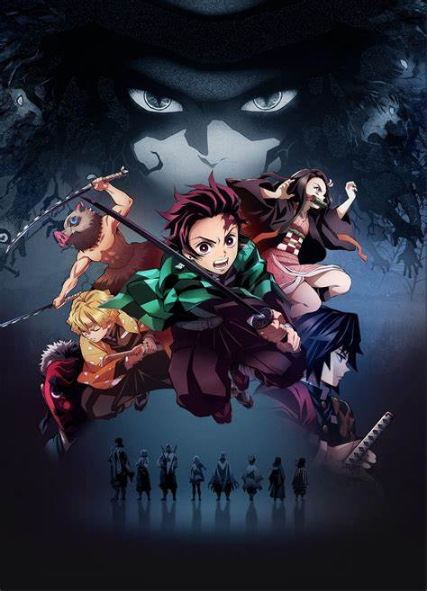

Kimetsu no Yaiba
No universo de "Kimetsu no Yaiba", dois personagens desempenham papéis fundamentais e opostos na batalha entre demônios e humanos: Muzan Kibutsuji e Kagaya Ubuyashiki, com Muzan encarnando o mal absoluto e Kagaya simbolizando a esperança e a resistência da humanidade.